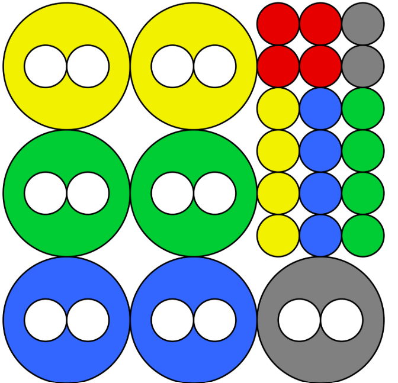

Bola de basebol multicolorida
Pensamento Computacional
Ensino Fundamental 2 e Ensino Médio
Informações gerais:
- Eixo: Pensamento Computacional – modelagem, sistemas discretos, estados,
transições, autômatos, raciocínio algorítmico e lógico.
- Público: Estudantes do Ensino Fundamental 2 (anos finais) e Ensino Médio.
- Objetivo: Desenvolver raciocínio lógico e algorítmico, criar e testar
algoritmos para resolver problemas concretos com restrições.
- Duração: Aproximadamente 1h30.
- Formato: Trabalho em grupos de 3 ou 4 alunos.
- Materiais: Peças do arquivo para imprimir e recortar.
Preparação da atividade (para o professor):
- Imprimir e recortar as peças do jogo.
- Demonstrar o funcionamento no quadro ou projetor usando os links fornecidos.
- Organizar a turma em grupos e distribuir um conjunto de bases e peças para cada grupo.

Materiais do jogo de basebol multicolorido.
Execução da atividade:
- Exploração inicial: manipular as peças e tentar encontrar uma solução para qualquer configuração
inicial.
- Debater: é possível resolver a partir de qualquer estado inicial?
- Desenvolver estratégias: criar um algoritmo que resolva o problema independentemente do ponto de
partida.
- Simular o algoritmo: um aluno atua como “computador” e outro como “programador”, enquanto um
terceiro cria estados iniciais desafiadores.
- Testar diferentes estratégias e avaliar sua eficácia.
Discussão e aprofundamento:
- Comparar algoritmos propostos e analisar por que alguns não funcionam para certos estados
iniciais.
- Explorar melhorias e ajustes para criar um algoritmo universal.
- Discutir o conceito de algoritmo “falso” (não convergente) e sua identificação.
Extensões:
- Avaliar o número de movimentos necessários para chegar à solução em diferentes cenários
(qualquer condição inicial, pior caso, etc.).
- Dividir o problema em subproblemas e desenvolver sub-algoritmos específicos.